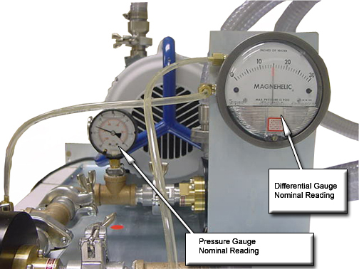
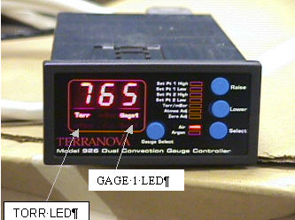

Operating Documentation
Direction 5133330-3, Rev# 14
Signa EXCITE HD 3.0T Service Methods
Module Version 1.0, Version Date 4/25/07
Operating Documentation |
| Required Persons | Preliminary Reqs | Procedure | Finalization |
|---|---|---|---|
| 1 | Not Applicable | 30 mins | Not Applicable |
| Item | Qty | Effectivity | Part# | Manufacturer | |
|---|---|---|---|---|---|
| A timing device (watch or clock with a second hand) | 1 | - | - | - | |
Verify vacuum system is properly connected and turn on vacuum pump. The Pressure Gauge should start to decrease and should eventually read between -22 and -25 inches in Mercury. The Differential Gauge should increment to -30 inches of water and then should stabilize between 8 and 16 inches of water as the vacuum level stabilizes.
Monitor pressure gauges in the rear of the TAC Cabinet. The Differential Gauge should read 10.7 inches in water (readings between 8 and 16 is acceptable). The Pressure Gauge should read between -22 and -25 inches in Mercury. This indicates a properly operating vacuum system.
Illustration 1: Vacuum Gauges

| NOTE: | In December, 2004 the vacuum system was re-designed using pressure regulators to control vacuum level. See Vacuum System Functional Check (For System Made After November 2004) for process to check operation of new vacuum system. |
| NOTE: | The following adjustment procedure will only work on the old style vacuum controller, model 926. This procedure can be used to verify proper programming of the new vacuum gauge. The Raise/Lower button is disabled on the new vacuum gauge, so no changes can be made. |
Verify that the vacuum pump is off. Make sure the vacuum system is at atmospheric pressure by opening the flange seal at the pump and allowing air to enter the system for 20 seconds.
Refer to Table 1 for atmospheric pressure setting value. Use the systems altitude to select atmospheric pressure in units of Torr.
Table 1: Atmospheric Pressure vs Altitude Table
| Altitude Above Sea Level | Barometer Pressure | Altitude Above Sea Level | Barometric Pressure | |||
| Feet | Meters | Torr | Feet | Meters | Torr | |
| -1000 | -305 | 790 | 4000 | 1220 | 655 | |
| -500 | -153 | 775 | 4500 | 1373 | 645 | |
| 0 | 0 | 760 | 5000 | 1526 | 630 | |
| 500 | 153 | 745 | 6000 | 1831 | 610 | |
| 1000 | 305 | 735 | 7000 | 2136 | 585 | |
| 1500 | 458 | 720 | 8000 | 2441 | 565 | |
| 2000 | 610 | 705 | 9000 | 2746 | 545 | |
| 2500 | 763 | 695 | 10000 | 3050 | 520 | |
| 3000 | 915 | 680 | 15000 | 4577 | 430 | |
| 3500 | 1068 | 670 | 20000 | 6102 | 350 | |
Go to the Twin Accessory Cabinet and verify that the Vacuum Gauge Controller (VGC) is powered. Verify that the VGC display shows a pressure, and the Torr and Gage1 LED’s are lit. See Illustration 2. If they are not lit, press the <Select> button to advance the LED bar and stop at the “Torr/mBar” location.
Illustration 2: Vacuum Gauge Controller

Press <Raise> or <Lower> to change to “Torr”. To change to Gauge 1, press the <Gauge Select> button.
Use Table 2 and make sure the controller is programmed correctly. Use the Raise and Lower buttons (Model 926 only) to program values.
Table 2: Vacuum Gauge Settings
| Setting | Value | Units |
| Set Pt 1 High | 190 | Torr |
| Set Pt 1 Low | 150 | Torr |
| Set Pt 2 High | 200 | Torr |
| Set Pt 2 Low | 130 | Torr |
| Torr/mBar | Torr | N/A |
| Atmos Adj | Value from Step 2 | Torr |
| Zero Adj | N/A | N/A |
| Air/Argon | Air | N/A |
Verify that the “Select” button is switched to “AIR” to properly monitor the vacuum.
Use a clock or a watch that displays seconds.
Start timing after turning on Vacuum Pump. The power switch is located on the side of vacuum pump inside of Twin Accessory Cabinet.
Monitor Vacuum Gauge Controller reading; the pressure should reduce to 150 Torr within 5 minutes. If 150 Torr is not reached, check for vacuum leaks and secure hose connections. Refer to vacuum troubleshooting procedure.
After reaching 150 Torr, the solenoid valve should close and the pressure should start rising.
When 190 Torr is reached, the valve should open and pressure should start decreasing. Nominal recovery time for vacuum to decay from 150 Torr to 190 Torr is around 60 seconds. If the decay time is around 30 seconds or less check for vacuum leaks.
Watch this for at least 3 cycles for proper operation.
No finalization steps.